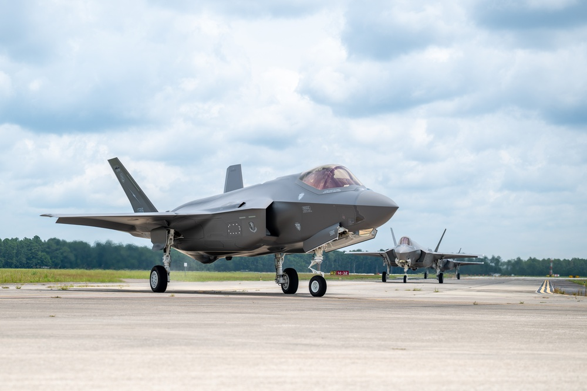

The F-35 Lightning II is one of the most advanced fighter aircraft ever developed, representing a new generation of air combat technology. Designed and produced by Lockheed Martin, it is a fifth-generation multirole stealth fighter built to operate in highly contested environments where traditional aircraft may struggle to survive.
One of the defining features of the F-35 is its stealth capability. The aircraft is designed with a special shape and radar-absorbing materials that significantly reduce its visibility to enemy radar systems. This allows it to approach targets undetected and carry out missions with a strategic advantage.
Beyond stealth, the F-35 is equipped with an advanced suite of sensors and avionics that provide pilots with unmatched situational awareness. Its systems collect and fuse data from multiple sources, displaying a clear and comprehensive view of the battlefield. This capability allows pilots to make faster and more informed decisions during complex operations.
The aircraft is also designed for versatility. It can perform air-to-air combat, ground attack, reconnaissance, and electronic warfare missions. In addition, the F-35 exists in multiple variants, including conventional takeoff, short takeoff/vertical landing, and carrier-based versions, making it adaptable for different military needs.
Another major advantage of the F-35 is its ability to share data with other aircraft and ground systems in real time. This network-centric capability transforms it into more than just a fighter jet—it becomes a key part of a larger combat system, improving coordination and effectiveness across the entire force.
Overall, the F-35 Lightning II represents a major leap forward in military aviation. Its combination of stealth, advanced technology, and multi-mission capability ensures that it will remain a central component of modern air power for years to come.